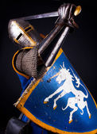

Lord Marrecos
Marrecos era um jovem cavaleiro que sonhava em se tornar um herói. Ele vivia em um reino pacífico, governado pelo sábio rei Artur. Marrecos era um dos cavaleiros da Távola Redonda, um grupo de nobres guerreiros que serviam ao rei e defendiam o reino das ameaças

Um dia, o rei Artur convocou os cavaleiros da Távola Redonda para uma missão especial. Ele disse que havia recebido uma carta de um rei distante, pedindo ajuda para combater um terrível dragão que assolava o seu reino. O rei Artur disse que enviaria um dos seus cavaleiros para ajudar o rei em apuros, e perguntou quem se voluntariaria.
Marrecos foi o primeiro a se oferecer. Ele disse que era o seu sonho enfrentar um dragão e provar o seu valor. O rei Artur ficou impressionado com a coragem de Marrecos, mas também preocupado com a sua inexperiência. Ele disse que Marrecos poderia ir, mas teria que levar consigo um cavaleiro mais velho e sábio, que o aconselharia e protegeria. Ele escolheu o cavaleiro Lancelote, o mais bravo e honrado dos cavaleiros da Távola Redonda.
Marrecos ficou feliz por ter a companhia de Lancelote, mas também um pouco ressentido. Ele achava que podia enfrentar o dragão sozinho, e não queria dividir a glória com ninguém. Ele pensou em como impressionaria o rei Artur e a bela princesa Guinevere, por quem ele era secretamente apaixonado, ao voltar com a cabeça do dragão.
Marrecos e Lancelote partiram em suas montarias, levando consigo suas armas e armaduras. Eles viajaram por muitos dias, atravessando florestas, rios e montanhas, até chegarem ao reino do rei que os havia chamado. Lá, eles foram recebidos com honra e gratidão. O rei lhes contou que o dragão vivia em uma caverna próxima, e que todos os dias saía para cuspir fogo e devorar animais e pessoas. Ele disse que ninguém ousava se aproximar da caverna, e que muitos cavaleiros já haviam tentado matar o dragão, mas nenhum havia voltado vivo.
Marrecos disse que não tinha medo do dragão, e que estava pronto para enfrentá-lo. Lancelote disse que era preciso ter cautela, e que eles deveriam estudar o dragão antes de atacá-lo. Ele sugeriu que eles se escondessem em um lugar seguro, e observassem os hábitos do dragão, para encontrar uma brecha em sua defesa.
Marrecos não gostou da ideia de Lancelote. Ele achava que isso era covardia, e que eles deveriam atacar o dragão de frente, sem hesitar. Ele disse que não precisava de estratégia, apenas de coragem e força. Ele disse que iria sozinho à caverna do dragão, e que Lancelote poderia ficar esperando.
Lancelote tentou dissuadir Marrecos de sua imprudência, mas Marrecos não quis ouvir. Ele pegou sua espada e seu escudo, montou em seu cavalo, e partiu em direção à caverna do dragão. Lancelote ficou preocupado com Marrecos, mas decidiu segui-lo à distância, para ajudá-lo se fosse preciso.
Quando Marrecos chegou à caverna do dragão, ele viu uma enorme fera vermelha, com escamas brilhantes, asas enormes e dentes afiados. O dragão estava dormindo profundamente, emitindo um ronco ensurdecedor. Marrecos pensou que aquela era a sua chance de matar o dragão sem dificuldade. Ele se aproximou sorrateiramente da caverna, levantou sua espada, e desferiu um golpe na cabeça do dragão.
Para sua surpresa, a espada ricocheteou nas escamas do dragão, sem causar nenhum dano. O dragão acordou assustado, e viu Marrecos diante dele. Ele soltou um rugido furioso, e cuspiu uma bola de fogo na direção de Marrecos. Marrecos conseguiu se esquivar do fogo, mas perdeu o equilíbrio e caiu do cavalo. O cavalo, assustado, fugiu da caverna.
Marrecos se levantou rapidamente, e tentou atacar o dragão novamente. Ele golpeou o dragão com sua espada, mas não conseguiu perfurar sua pele. O dragão revidou com suas garras, mas Marrecos se defendeu com seu escudo. Os dois lutaram por um tempo, mas Marrecos logo percebeu que estava em desvantagem. Ele não conseguia ferir o dragão, e estava ficando cansado e machucado.
Marrecos começou a se arrepender de sua decisão de enfrentar o dragão sozinho. Ele pensou que talvez Lancelote tivesse razão, e que ele deveria ter ouvido seus conselhos. Ele pensou que talvez ele não fosse um herói, mas apenas um tolo. Ele pensou que talvez ele fosse morrer ali, sem ter realizado seu sonho.
Foi então que ele ouviu um som familiar. Era o som de um cavalo galopando em sua direção. Era Lancelote, que havia chegado para ajudá-lo. Lancelote tinha uma lança em sua mão, e uma armadura brilhante em seu corpo. Ele parecia um anjo salvador.
Lancelote se aproximou do dragão, e lançou sua lança contra ele. A lança acertou o dragão no peito, perfurando seu coração. O dragão soltou um último suspiro, e caiu morto no chão.
Marrecos ficou aliviado e agradecido por Lancelote ter salvo sua vida. Ele pediu desculpas a Lancelote por ter sido arrogante e teimoso. Ele disse que tinha aprendido uma lição valiosa, e que nunca mais iria subestimar a sabedoria de Lancelote.
Lancelote aceitou as desculpas de Marrecos, e disse que estava orgulhoso dele por ter tido coragem de enfrentar o dragão. Ele disse que Marrecos tinha potencial para se tornar um grande cavaleiro, mas que precisava de humildade e paciência. Ele disse que eles eram amigos, e que juntos seriam mais fortes.
Marrecos e Lancelote cortaram a cabeça do dragão, e levaram como troféu para o rei que os havia chamado. O rei ficou muito feliz com a vitória dos cavaleiros, e os recompensou com ouro e honras. Ele disse que eles eram os maiores heróis do seu reino, e que sempre seriam bem-vindos.
Marrecos e Lancelote voltaram para o seu reino, onde foram recebidos com festa e admiração pelo rei Artur e pela princesa Guinevere. Marrecos contou sua história ao rei Artur, e reconheceu a ajuda de Lancelote. O rei Artur elogiou Marrecos por sua bravura e honestidade, e disse que ele era um verdadeiro cavaleiro da Távola Redonda.
Marrecos ficou feliz por ter cumprido seu sonho de matar um dragão, mas mais feliz ainda por ter ganhado um amigo fiel. Ele percebeu que a glória não era tudo na vida, e que o mais importante era o amor e a amizade. Ele olhou para a princesa Guinevere, e sentiu seu coração bater mais forte. Ele pensou que talvez ele tivesse uma chance de conquistá-la.
Fim.